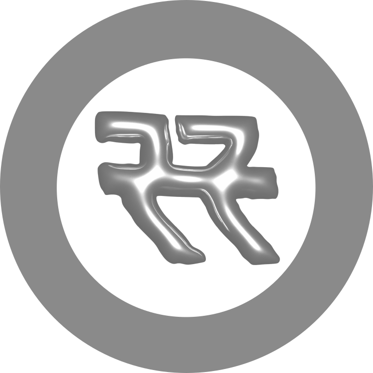
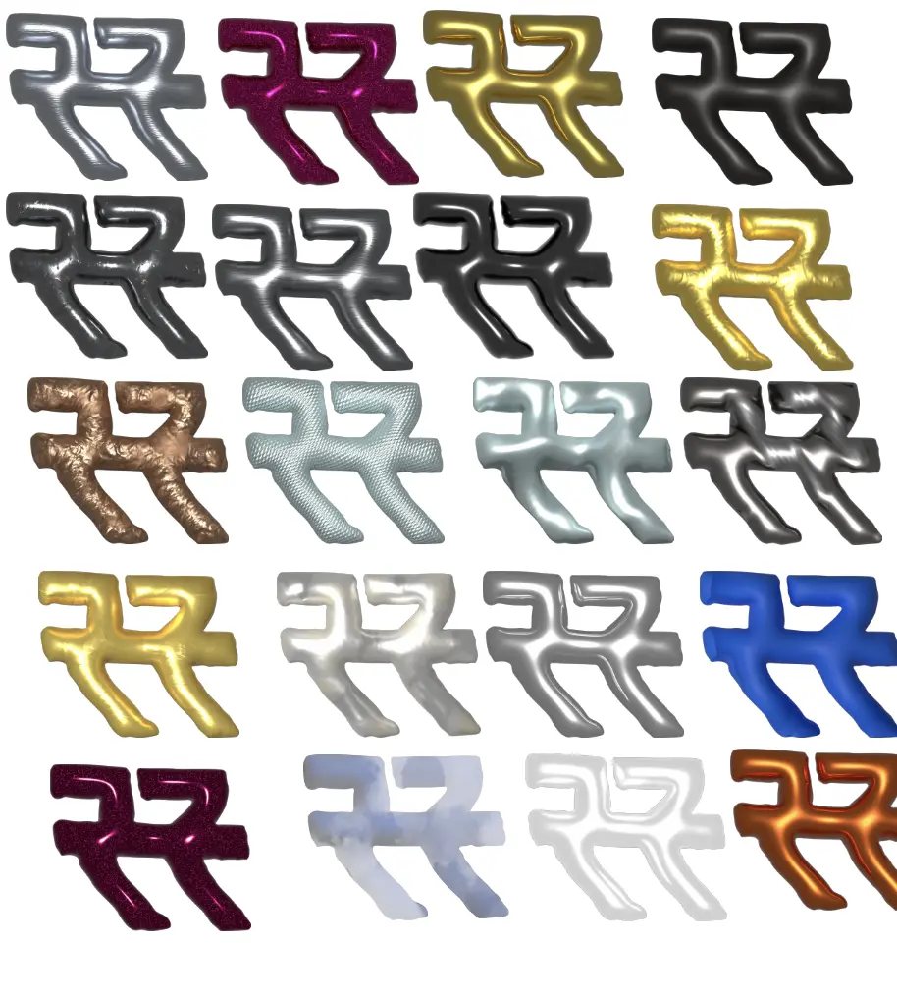
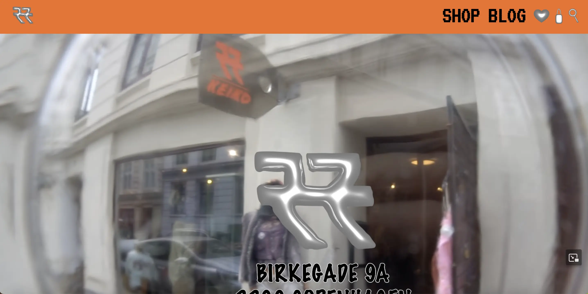
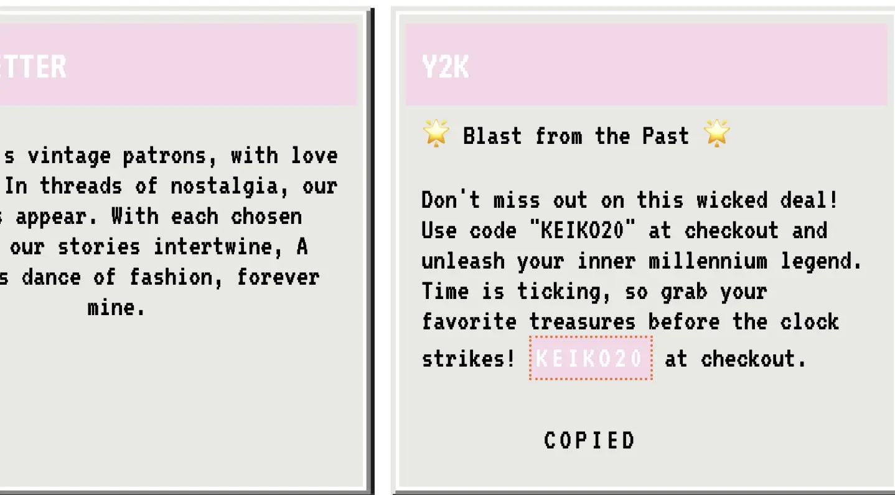
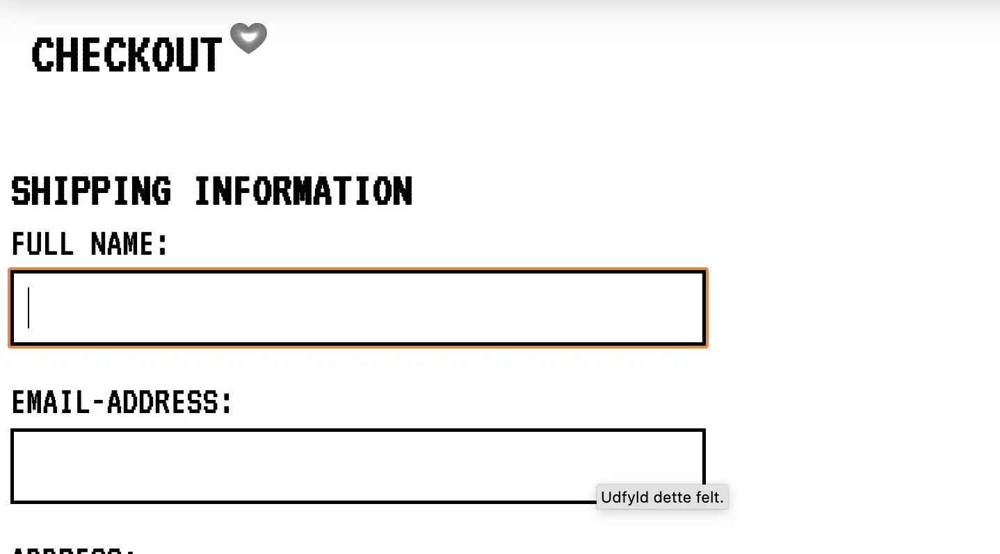
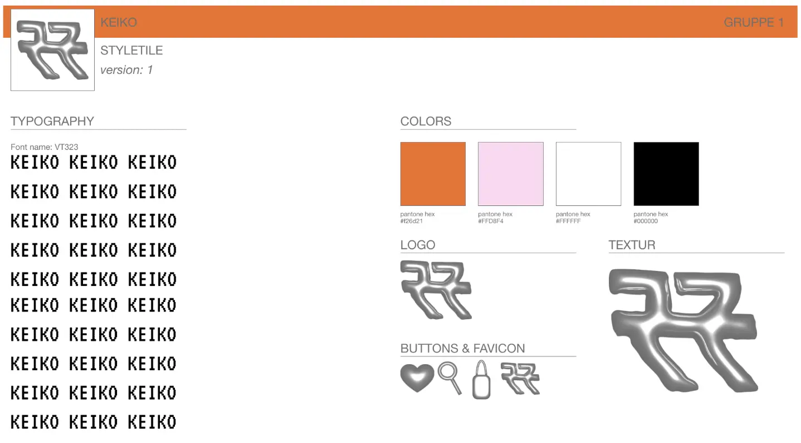

VIRKSOMHEDSSITE // KEIKO
Det sidste projekt var også under femte tema. Opgaven var, i grupper af 4-5 personer, at finde en
virksomhed, vis
hjemmeside vi skulle re-designe. I gruppen blev vi hurtige enige om at finde en genbrugsbutik, og
Keiko var den perfekte
mulighed.
Vi kom i kontakt med brandet og aftalte tid for interview, hvor vi kom tættere ind på, hvad de
ønskede i en video og
hjemmeside. Så begyndte vi på research af Y2K stilen, og herefter indledte vi brainstormen af logo,
knapper og look på
hjemmesiden.
Jeg skitserede logoet for at finde ud af hvilket look, det præcist skulle have, så knapperne kunne
laves efter det. Vi
blev enige om, at 3D-looket i sølv var den bedste mulighed. Vi valgte at lave Y2K-stilen både på
videoen og på
hjemmesiden for at understøtte genbrug og vintagebrandet.
Videoen tager os igennem en shopping tur i Keiko-butikken. Vi valgte dette, da vi gerne ville
introducere den fysiske
butik, på onlinebutikken. Jeg fik ansvaret for siderne, der tager brugeren fra kurven til
checkout-end. Her
implementerede jeg bokse, som skal udfyldes, før man kan komme videre.




